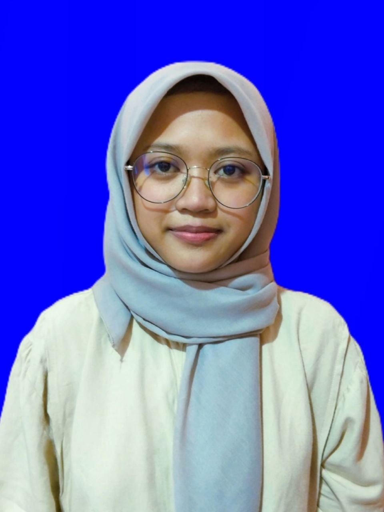

Auliya Nur Anisa
Mahasiswa S1 Sistem Informasi • Universitas Kuningan
Tentang Saya
Halo semuanya, perkenalkan nama aku Auliya Nur Anisa (biasa dipanggil Aul). Saat ini aku berusia 20 tahun. Selain sibuk kuliah dan mengejar deadline tugas harian, aku juga aktif bekerja part-time di hari libur untuk melatih kemampuan komunikasi dengan banyak orang. Di waktu senggang, aku senang meluangkan waktu untuk belajar bermain gitar secara otodidak.
Akademik - Jadwal Kuliah
| Hari | Nama Kelas Mata Kuliah | Jam | Ruang |
|---|---|---|---|
| Senin | |||
| Senin | Riset Operasi - 25-02 | 13:00 - 14:35 | FKOM-Ruang H |
| Senin | Pemrograman Dasar - 25-02 | 14:40 - 16:15 | FKOM-Ruang I |
| Selasa | |||
| Selasa | Analisis dan Perancangan Sistem Informasi - 25-02 (Praktikum) | 08:00 - 09:35 | FKOM-Lab. Multimedia |
| Selasa | Statistika Data - 25-02 | 09:40 - 11:15 | FKOM-Ruang K |
| Selasa | Pemrograman Dasar - 25-02 (Praktikum) | 14:40 - 16:15 | FKOM-Lab. RPL |
| Rabu | |||
| Rabu | Analisis dan Perancangan Sistem Informasi - 25-02 | 10:30 - 12:05 | FKOM-Ruang E |
| Rabu | Kalkulus - 25-02 | 13:00 - 14:35 | FKOM-Ruang I |
| Kamis | |||
| Kamis | Web Desain - 25-02 (Praktikum) | 08:00 - 09:35 | FKOM-Lab. RPL |
| Kamis | English Communication for IT - 25-02 | 09:40 - 11:15 | FKOM-Ruang A |
| Kamis | Web Desain - 25-02 | 13:00 - 14:35 | FKOM-Ruang C |
| Jumat | |||
| Jumat | Analisis Proses Bisnis - 25-02 | 08:00 - 10:25 | FKOM-Ruang I |
| Jumat | Statistika Data - 25-02 (Praktikum) | 13:00 - 14:35 | FKOM-Lab. Multimedia |
| Jumat | Arsitektur Komputer dan Sistem Operasi - 25-02 | 15:30 - 17:05 | FKOM-Ruang R |
Hubungi Saya
- Email: 20250910045@student.uniku.ac.id
- Instagram: @aullyiaa12
- GitHub: 20250910045-coder/Pweb1
- Lokasi Kampus: Fakultas Ilmu Komputer, Universitas Kuningan, Jl. Cut Nyak Dhien No.36A, Cijoho